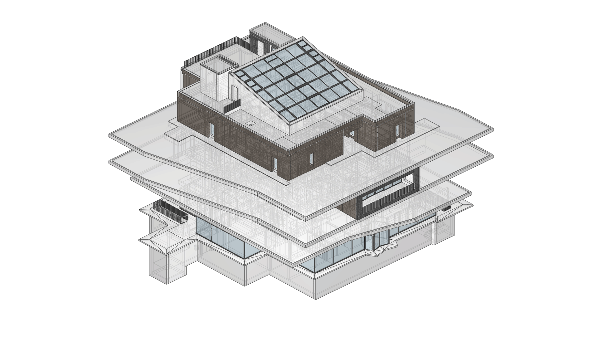

COMPAS IFC
A front-end data model for the Industry Foundation Classes (IFC), the open exchange format for Building Information Modelling.
{kind=link}

Why
The IFC schema accommodates virtually any building concept, but its breadth
makes it costly to work with: a small piece of geometry must navigate dozens
of class hierarchies and reach across several relationship entities.
COMPAS IFC presents one container class
(BuildingInformationModel) and one element class
(GenericElement) on top of that schema, plus an
explicit spatial tree, an interaction graph, an integrated geometry kernel,
and a Pydantic-based validation engine. The resulting front-end exposes
fewer than fifty user-facing members for the operations a typical workflow
needs.
How it differs
Integrated geometry kernel. Geometric definitions are not just stored; they are computed. Volumes, surface areas, bounding boxes, and contact detection work uniformly across primitives, swept solids, B-Reps, and meshes — backed by COMPAS core and OpenCascade.
Explicit spatial hierarchy. Containment is materialised as a tree with direct
parent/childrenpointers. Placement chains that diverge from the spatial hierarchy on import are rectified automatically while preserving global positions.Unified element strategy. Every IFC product subclass is represented by the same Python class, distinguished by an
ifc_typestring. Custom strings without a matching IFC class fall back gracefully toIfcBuildingElementProxy.Structured customisation. Custom property requirements are declared as Pydantic schemas, enforced at insertion time, and exportable to JSON Schema for downstream tooling.
Lossless round-trip. IFC2X3, IFC4, and IFC4X3 files survive a load → modify → save cycle without representational degradation.
Three coherent surfaces. The same data model is reachable from Python, from a command-line interface with stable
--jsonoutput, and through an agent skill that ships with the package — so AI coding agents drive the library through real commands rather than synthesising scripts.
Quick start — Python
from compas_ifc.bim import BuildingInformationModel
model = BuildingInformationModel("data/Duplex_A_20110907.ifc")
for storey in model.storeys:
print(storey.name, "->", len(list(storey.children)), "children")
walls = model.get_elements_by_type("IfcWall")
print(sum(w.volume or 0 for w in walls), "m³ of wall volume")
model.save("modified.ifc")
Quick start — command line
Every command takes --json for parseable output; without it, the
default is a compact terminal rendering.
python -m compas_ifc summary data/Duplex_A_20110907.ifc
python -m compas_ifc list data/Duplex_A_20110907.ifc --type IfcWindow
python -m compas_ifc visualize data/Duplex_A_20110907.ifc \
--type IfcWindow --detach
See Command-line interface for the full command reference.
Quick start — Claude Code skill
Install the bundled agent skill once, then any Claude Code session can
drive compas_ifc on your behalf:
python -m compas_ifc install-skill
The skill ships inside the package, so the recipes Claude follows are always aligned with the library version you actually have installed. See Agent skill (Claude Code) for what the skill contains.
Standing on giants’ shoulders
COMPAS IFC builds on:
COMPAS framework — geometry, data structures, and visualisation.
IfcOpenShell — schema-aware low-level IFC parsing and writing.
compas_occ — OpenCascade bindings for B-Rep and NURBS.
Shapely — 2D geometry for the contact/collision narrowphase.
Pydantic — declarative schema validation.
Provenance
COMPAS IFC is the open-source artefact described in chapter 4 of Future
Data Models for AEC: From Simplicity for Humans to Interoperability by AI
(Li Chen, ETH Zürich, 2026). The reproducible evaluation suite that backs
the chapter’s claims lives in thesis/appendix/A/ of the source
repository.
For questions or contributions please open an issue on GitHub or contact li.chen@arch.ethz.ch.